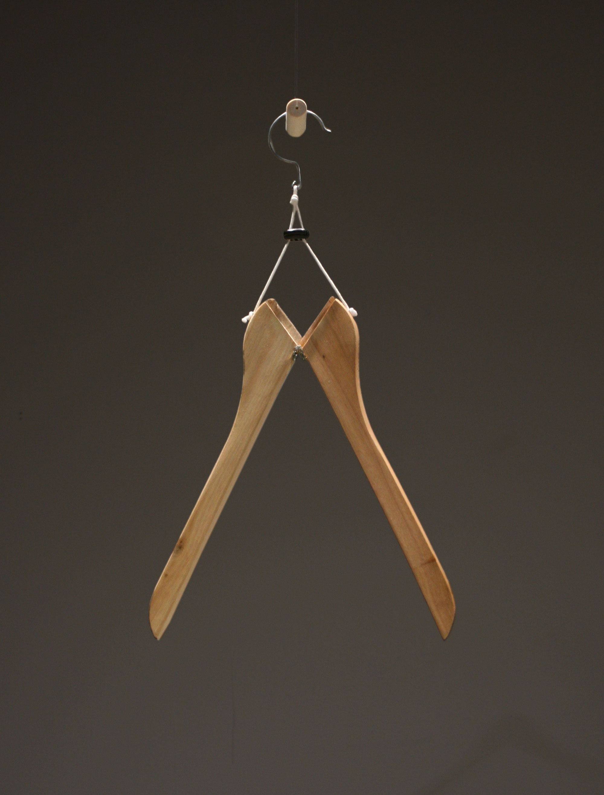
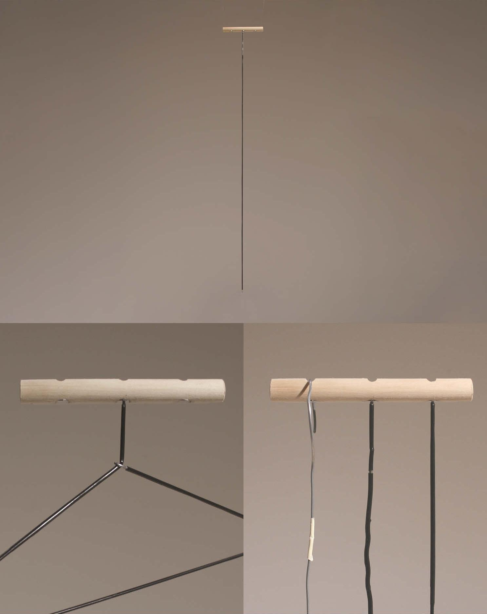
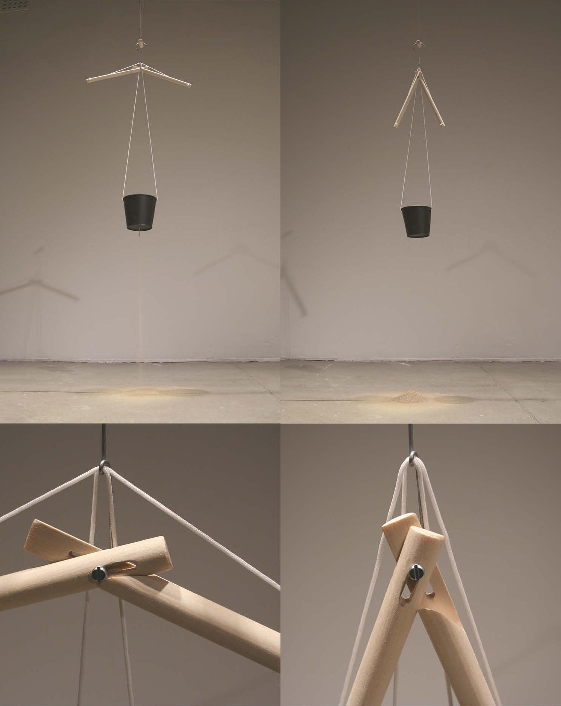
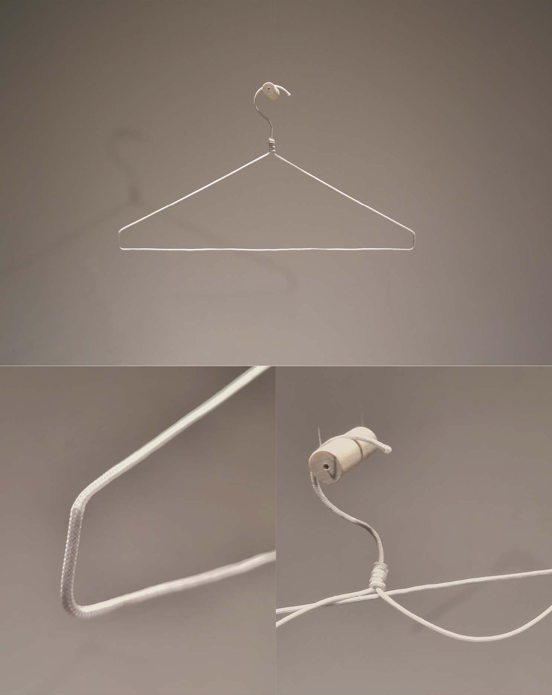
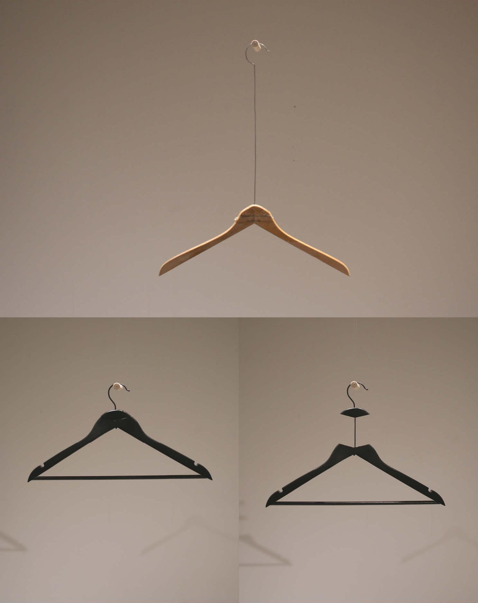
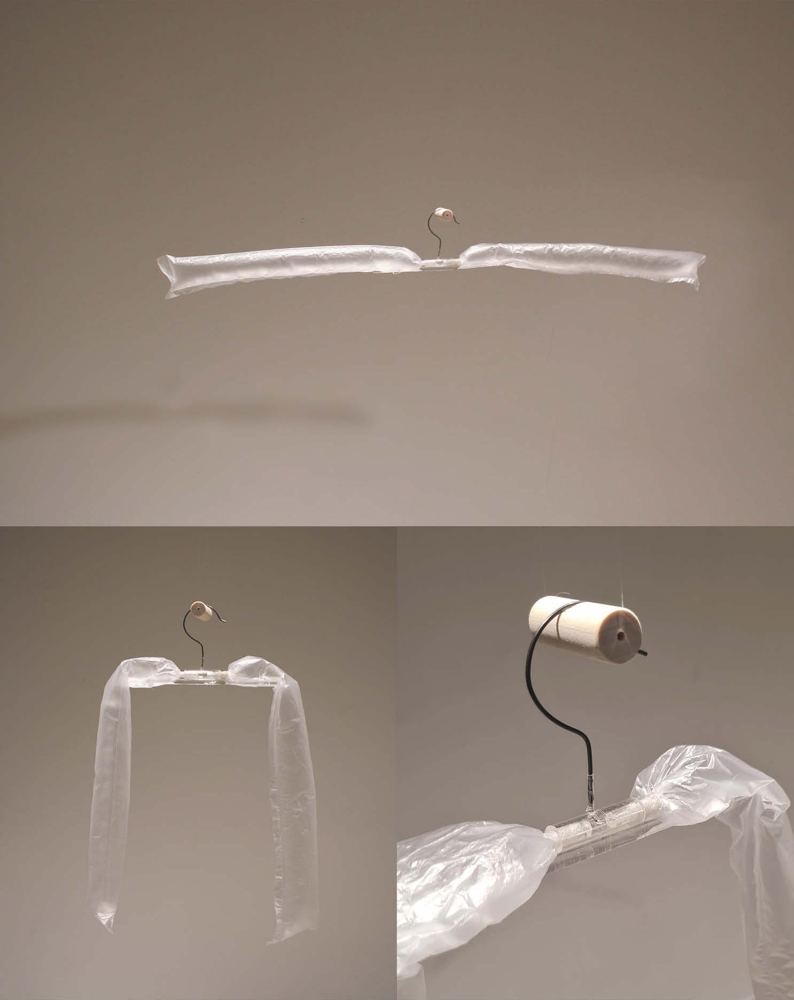
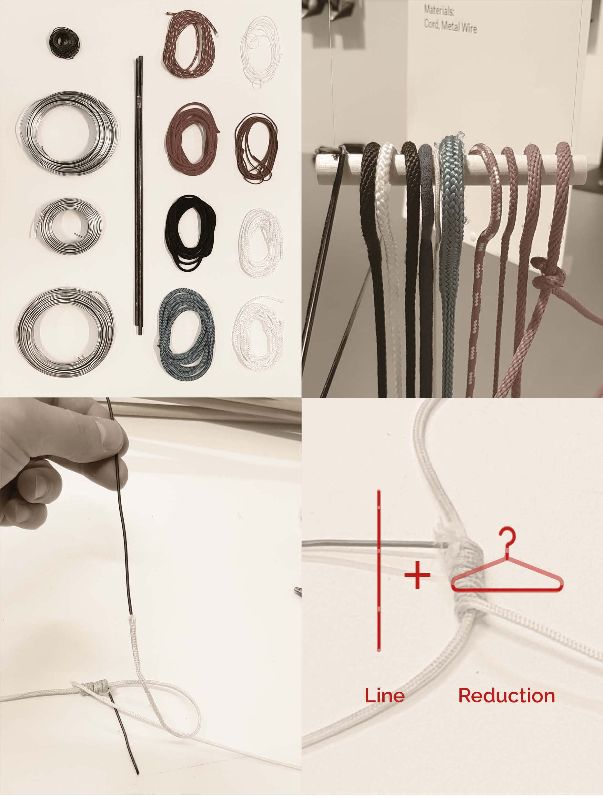
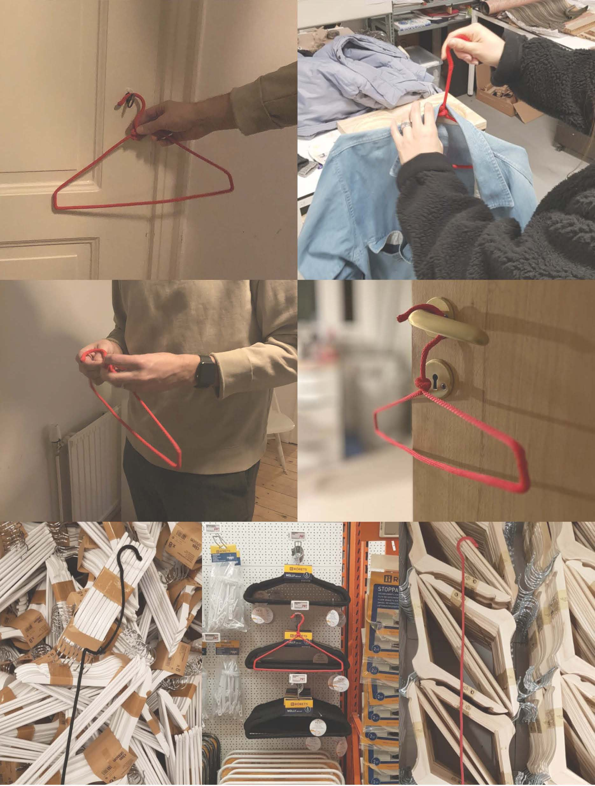
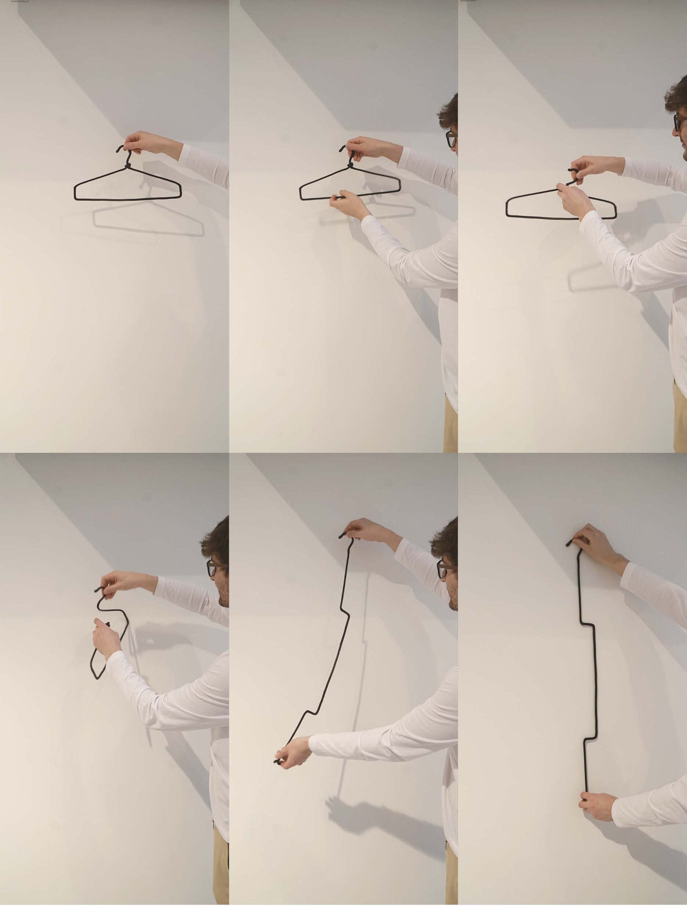
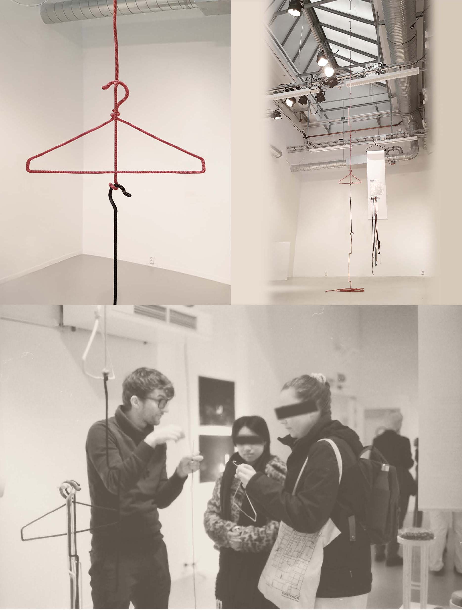

06 / 2022
Hanger
Collapse
A wire hanger reduced to a single line. It is ultra-light, assembled by its owner, and folds flat for transport. Self-assembly builds an emotional connection to the object, slowing the resource cycle.
- Year
- 2022
- Context
- Konstfack University of Arts, Crafts and Design
- Duration
- Three months
- Practice
- Design ecologies, Industrial design, Design research, Concept development, Physical prototyping, Ecoliteracy principles


Ecoliteracy principle: Making the invisible visible. Dimension: Space.
Reverse engineering reduces the classic wire hanger to a line. The actual length of the material becomes visible and opens up alternative affordances.

Ecoliteracy principle: Making the invisible visible. Dimension: Time.
After a while, the hanger folds and the clothes fall to the floor. Forgotten garments become visible and call for action.

Ecoliteracy principle: Anticipating unintended consequences. Dimension: Space.
The hanger looks ordinary, but the metal wire is removed wherever it is not needed. This makes it collapsible.

Ecoliteracy principle: Making the invisible visible. Dimension: Relation.
Stretching one element of the classic hanger opens up new uses. It can make new spaces usable, reveal hidden dependencies, or act as a symbol.

Ecoliteracy principle: Anticipating unintended consequences. Dimension: Space.
Pockets in clothing can be inflated to serve as a hanger. The air we need becomes visible, and the hanger itself disappears.

Reduced dimension and extraction are combined. Wire is used only at essential points, and the shape simplifies and disentangles.

Prototypes were tested with users in different contexts. Analysis of the point of sale also revealed space and resource inefficiencies in mass retail.

The hanger is made from one continuous line of cord, transported compactly, and assembled by the user.

The concept was shown in an exhibition. Feedback from visitors informed details for improvement.